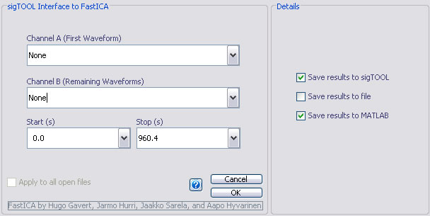

Independent Components Analysis
Email: sigtool@kcl.ac.uk

Email: sigtool@kcl.ac.uk
Author: Malcolm Lidierth
Updated: November 2008
sigTOOL provides mechanisms for independent components analysis using FastICA and Icasso. These third party packages need to be dowloaded separately; they are not included in the sigTOOL distribution. To download both FastICA and Icasso visit http://www.cis.hut.fi/projects/ica/fastica/
FastICA was written by and is copyright of Hugo Gävert, Jarmo Hurri, Jaakko Särelä, and Aapo Hyvärinen
Icasso was written by and is copyright of Johan Himberg
Perform independent components analysis using FastICA by selecting the Waveform->Independent Components->FastICA menu option. You will be prompted to select the channels to analyze:

You can select a single continuous waveform channel for Channel A and then select from the list of valid channels in the Channel B selector or drag and drop a list of channels into the Channel A selector. All channels must be continously sampled and the same rate and be synchrounous (as defined by the isInSynch sigTOOL function).
Start and stop times (in seconds) restrict the analysis to the indicated period.
The Details box allows you to select to
When you click the OK button, the FastICA GUI will appear:
This is the standard FastICA GUI provided in the FastICA package but has an 'Export to sigTOOL:' button added. In addition, the 'Load Data' button is not used within sigTOOL: use the Waveform->Independent Components->FastICA menu option to load/change the data.
Select the FastICA options using the GUI then choose 'Do ICA' to perform the analysis followed by 'Export to sigTOOL' to place the results in the sigTOOL data view/save to file/save to base workspace according to the selections made previously in sigTOOL.
Note that you can not use the FastICA GUI when batch processing files and the Apply to all open files option is not avaible. Both are available when using Icasso as described below.
The Icasso software calls FastICA repeatedly and tests the reliability of the results using a cluster analysis. The Icasso package provides mechanisms to visualize the results. To run Icasso from sigTOOL choose the Waveform->Independent Components->Icasso menu option. This displays
The main panel is basically identical to that for FastICA but allows selection of "Apply to all open files". In the details, you can select the options for running Icasso:
'approach', 'symm', 'g', 'pow3', 'maxNumIterations', 100
in the text box (note these are the default settings when the box is left empty). See the full documenation at http://www.cis.hut.fi/projects/ica/fastica/ for details.
As with FastICA, you can select to save the results to the sigTOOL data view, to a MAT-file and/or to the MATLAB workspace.
Results saved to sigTOOL will be the independent components saved as new channels and ordered according to their reliability as determined by a call to IccasoResult (IC1 through ICn correspond to the n most reliable estimates ranked by their Iq values).
Results saved to a file or to the MATLAB base workspace are saved as a standard Icasso output structure. These may be used as input to the visualization routines in Icasso e.g. IcassoShow. Base workspace variables will be named Icasso_XXXX where XXXX is the name of the sigTOOL data view e.g. Icasso_demoICA if you use the file described below. Files will be named Icasso_XXXX where XXXX is the name of the source sigTOOL data view and will conatin a single structure variable (named 'sR'). Files are saved to the system temporary file folder.
The sigTOOL/demos folder contains a file called demoICA.kcl. To test out FastICA and Icasso load this file in sigTOOL. Channels 2-4 of the file contain [1] a biological signal mixed with a sinusoid [2] the same signal mixed with a sawtooth [3] a combination of both signal/sinusoid and sawtooth.
Use FastICA or Icasso to estimate 3 independent components from channels 2-4. What you see will vary - the order of the components and their sign is not fixed and amplitude information is lost. The trace below shows the output from one rin of FastICA on channels 5 through 7 (the original biological signal is shown for comparison on channel 1).
Note that, in this run, the sawtooth was inverted in the output while the sinusoid and the biological signal are not.
For a discussion of how to interpret the output, see the FastICA/Icasso website at http://www.cis.hut.fi/projects/ica/fastica/.
© The Author and King's College London, 2008-